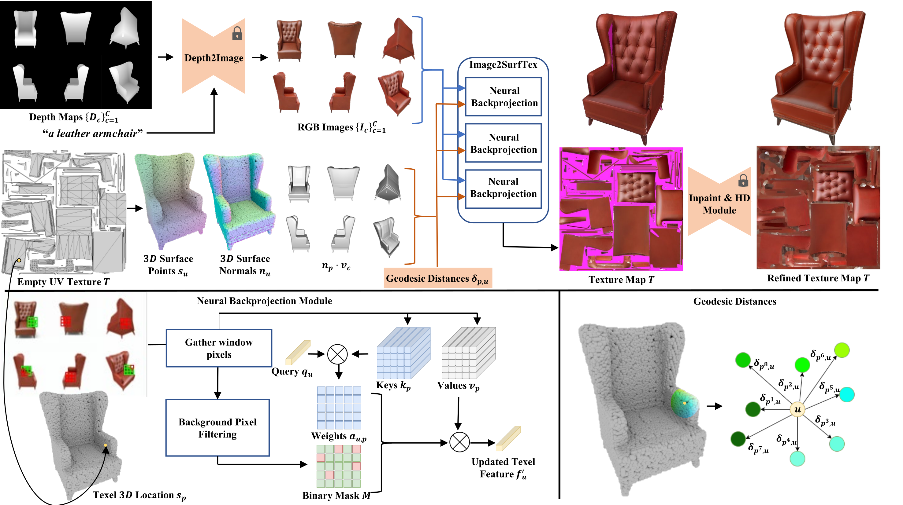

Im2SurfTex: Surface Texture Generation via Neural Backprojection of Multi-View Images
{kind=link}
Abstract
We present Im2SurfTex, a method that generates textures for input 3D shapes by learning to aggregate multi-view image outputs produced by 2D image diffusion models onto the shapes’ texture space. Unlike existing texture generation techniques that use ad hoc backprojection and averaging schemes to blend multiview images into textures, often resulting in texture seams and artifacts, our approach employs a trained, feedforward neural module to boost texture coherency. The key ingredient of our module is to leverage neural attention and appropriate positional encodings of image pixels based on their corresponding 3D point positions, normals, and surface-aware coordinates as encoded in geodesic distances within surface patches. These encodings capture texture correlations between neighboring surface points, ensuring better texture continuity. Experimental results show that our module improves texture quality, achieving superior performance in high-resolution texture generation.

A gallery of 3D shapes across various categories, showcasing high-resolution, seamless, and coherent textures generated by Im2SurfTex.
Method Overview

{kind=link}
Top) The Im2SurfTex, pipeline utilizes depth images and a text prompt to generate a number of candidate views (RGB images) for a given shape. The views are aggregated through a learned backprojection module that incorporates geometric information, such as 3D location, normals, angles between normals, and view vectors, as well as geodesic neighborhood information (bottom right) of shape points corresponding to pixels of the generated RGB images. The backprojection module integrates several cross-attention blocks (bottom left) used to infer texel features and colors from the appearance and geometric information gathered from relevant, non-background pixels across all available views. As some texels may remain uncolored, an inpainting and high-definition (HD) module is applied to refine the texture map following Paint3D